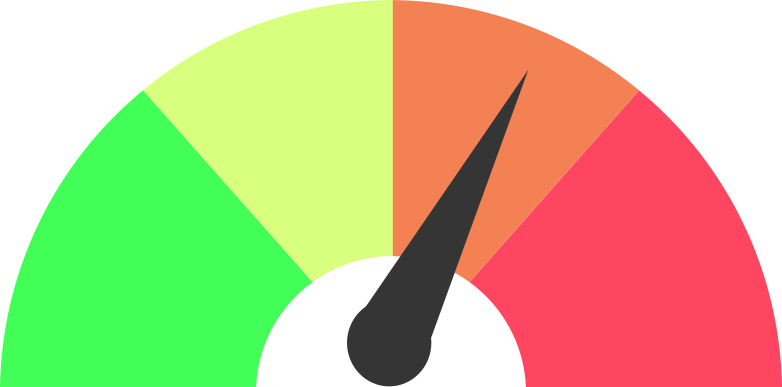
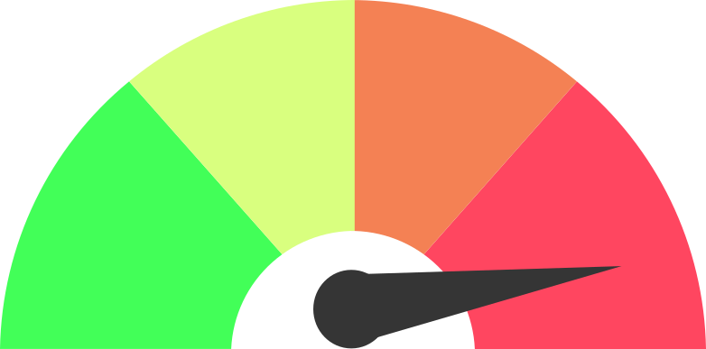

Nivel de Ciber-riesgo Mundial

|
Todo se ve bien. No hay amenazas significativa descubiertas. |
 |
Estamos en el proceso de rastreo de una nueva amenaza posiblemente significativa. Se recomienda que los usuarios tomen providencias inmediatas para contener el impacto. |
|  | Una interrupción importante en la conectividad es inminente o en progreso. |
|  | Pérdida de conectividad a través de la red. |
Fuente: SANS Institute
Historial de Ataques Mundiales
| Fecha | Estado | Motivo |
|---|---|---|
| 12 de Maio de 2017 | Yellow | WannaCry Ransomware Worm |
| 21 de Diciembre de 2016 | Yellow | Juniper ScreenOS VPN Backdoor |
| 16 de Abril de 2015 | Yellow | MS15-034 IIS HTTP.sys DoS Vulnerability |
| 23 de Enero de 2015 | Yellow | Adobe Flash Vulnerabilities |
| 26 de Septiembre de 2014 | Yellow | Bash Shellshock |